Огляди · журнал «ДентАрт» 2013 №1 (70)
Активація іригаційних розчинів в ендодонтичній практиці
IRRIGANT ACTIVATION IN ENDODONTIC PRACTICE
«Не так важливо, що Ви внесли в кореневий канал. Набагато важливіше, що Ви звідти видалили»
H. Schilder, «Pathways of the pulp», 1984
Очищення кореневого каналу в процесі іригації, видалення залишків пульпи, мікроорганізмів, мікробних токсинів1-3 — один із найважливіших чинників у профілактиці і лікуванні ендодонтичної патології. Застосовуючи механічну обробку,4 неможливо очистити кореневий канал повністю5-7 через його складну морфологію8, 9 (мал. 1). Навіть при використанні сучасних машинних нікель-титанових інструментів10 обробляється лише частина каналу і залишаються необробленими близько 40% його поверхні5, 10, 11 (мал. 2). Ці зони можуть містити ошурки, мікробні асоціації і продукти їхньої життєдіяльності8, 9, які у свою чергу можуть вплинути на якісну адаптацію обтураційного матеріалу12-13 і призвести до розвитку хронічного перирадикулярного запалення14 (мал. 3). Ось чому іригація є невід'ємною частиною обробки кореневого каналу: вона дозволяє очистити кореневий канал краще, ніж сама лише інструментація.15
Понад 50 років тому були сформульовані властивості ідеального іригаційного розчину.16 Він повинен:
- забезпечувати якісне промивання (видалення ошурків і вмісту кореневого каналу);
- знижувати тертя інструмента в процесі препарування (лубрикант);
- полегшувати видалення дентину (лубрикант);
- розчиняти неорганічну субстанцію (дентин);
- проникати в периферійні відділи каналу;
- розчиняти органічну тканину (колаген дентину, тканину пульпи, біоплівку);
- знищувати бактерії і гриби (також і в біоплівці);
- не викликати подразнення і ушкодження живих тканин в періапікальній зоні;
- не мати цитотоксичної дії;
- не ослабляти тканини зуба.
На жаль, на сьогодні жоден з розчинів не відповідає усім параметрам ідеального іриганту, навіть при використанні таких методів, як зниження pH,16 підвищення температури,18-19 а також додавання сурфактантів для збільшення змочувальної ефективності іриганту.20 У сучасній ендодонтичній практиці основними іригаційними розчинами є гіпохлорит натрію (NaOCl), етилендиамінтетраоцтова кислота (ЕДТА) і хлоргексидин (CHX)21 (мал. 4).
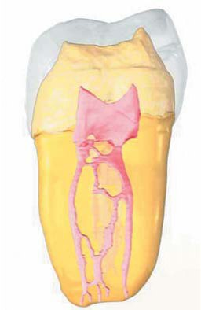
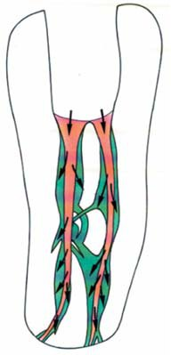
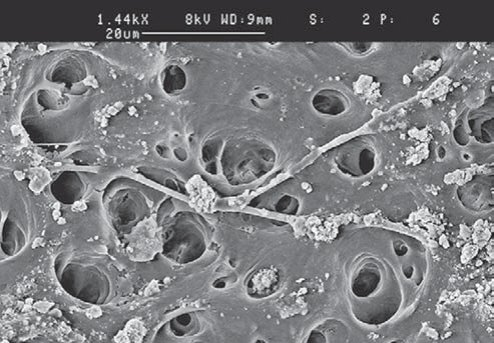
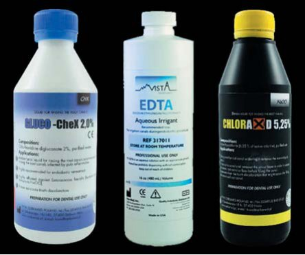
Для максимального ефекту ці розчини повинні перебувати у безпосередньому контакті з усією поверхнею каналу,16, 22 особливо в апікальній частині вузьких кореневих каналів (мал. 5).
Щоб отримати максимальну ефективність іригаційних розчинів, застосовують різні способи.
Нагрівання розчину гіпохлориту натрію значно посилює розчинювальну активність іриганту.23 Камбурис і співавт. (Kamburis et al.)24 встановили, що підігрітий гіпохлорит натрію ефективніший в розчиненні органічної субстанції у порівнянні з непідігрітим у тій же концентрації. Важливий той факт, що стабільність підігрітого до 37° розчину гіпохлориту натрію із незмінною кількістю хлору зберігається протягом 4 годин, а при нагріванні до 45-60° — протягом години.25 Таким чином, при нагріванні свіжого розчину його слід використати упродовж 1-1,5 годин.
Активація впливає також і на розчинювальну здатність гіпохлориту натрію26 (мал. 6). Водний розчин гіпохлориту натрію — це динамічна рівновага гідроксиду натрію і хлорнуватистої кислоти. Коли гіпохлорит натрію контактує з органічною тканиною, гідроксид натрію реагує з жирними кислотами, утворюючи мило і гліцерол, що відомо як реакція обмилення. Він також реагує з амінокислотами, утворюючи сіль і воду (нейтралізація). Також хлорнуватиста кислота реагує з амінокислотами з утворенням хлораміну і води. Ці реакції, які відбуваються в основному на поверхні, призводять до розрідження органічної тканини.27 У той же час, вступаючи в реакцію, молекули гіпохлориту натрію інактивуються, що призводить до зниження локальної активності. Тому для видалення решток нерозчинених тканин слід частіше замінювати розчин на активний.
Упродовж усієї історії ендодонтії проводилося безліч досліджень, метою яких була розробка ефективнішої системи для іригації і активації розчинів. Ці системи можна розподілити на 2 групи: мануальні методики активації і машинні системи (таблиця 1).
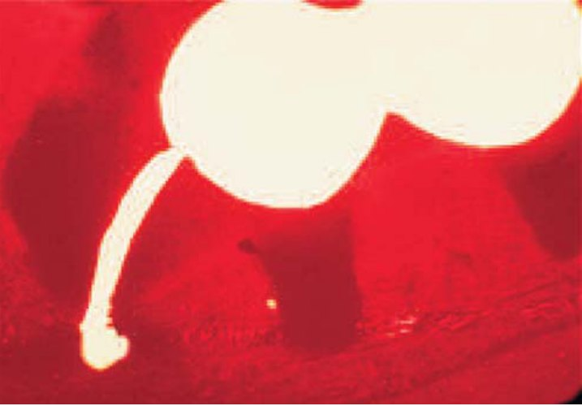
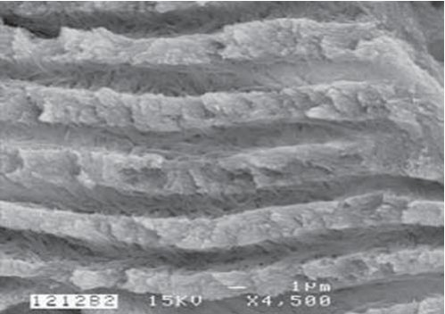
| Техніка і прилади для активації іригаційного розчину | ||||||||
|---|---|---|---|---|---|---|---|---|
| Мануальні | Машинні | |||||||
| Шприц та ендоголки | Щітки | Мануально-динамічна | Пасивна і під тиском | Ультразвукова | Звукова | Безперервна при ротаційній інструментації | Ротаційні щітки | |
| З проміжками | Безперервна | |||||||
Journal of Endodontics, 35, Gu L, Kim JR, Ling J, Choi KK, Pashley DH, Tay FR et al, Review of Contemporary Irrigant Agitation Techniques and Devices, 792, 2009.
Мануальна техніка активації
Класична техніка
До появи пасивної ультразвукової активації традиційне промивання з використанням шприца вважалося ефективним методом введення іриганту.28 Ця техніка досі широко використовується як лікарями загальної практики, так і ендодонтистами. Техніка передбачає введення іриганту в канал з використанням голок різного калібру, як пасивно, так і з активацією (мал. 7). Остання досягається шляхом зворотно-поступальних рухів голки в кореневому каналі. Одні голки мають отвір на кінчику, в інших отвори містяться збоку при закритій верхівці.29 Такий дизайн голок з бічним отвором було розроблено для поліпшення гідродинамічної активації іриганту і зниження ризику заапікальної екструзії.30 При іригації дуже важливо, щоб голка розміщувалася в каналі вільно. Це дозволяє вимивати ошурки з каналу коронально, запобігаючи випадковому виведенню іриганту в періапікальні тканини. Одна з переваг іригації шприцом — порівняно легкий контроль глибини введення голки і об'єму розчину в каналі.28
Найчастіше для іригації використовують пластикові шприци різних розмірів (1-20 мл). Шприци великих об'ємів зменшують тривалість роботи, проте в той же час утруднюють контроль тиску, що може призводити до ускладнень. Тому для максимальної безпеки і контролю слід використовувати шприци об'ємом 1-5 мл. Важливий і дизайн ендоголки. До недавнього часу для іригації найчастіше використовували голки 25-го калібру. Нині у щоденній практиці використовуються голки 27-го, 30-го і навіть 31-го калібру. Згідно з міжнародним стандартом ISO, 27G відповідає 0,42 мм, а 30G — 0,31, що прийнятніше (таблиця 2). Дослідження засвідчують, що іригант має обмежений ефект за межами голки через наявність т.з. «мертвої зони» або утворення повітряної бульбашки, що знижує проникнення розчину в апікальну зону. Було розроблено різні модифікації кінчика голки для поліпшення ефективності промивання і зниження ризику ускладнень при іригації (мал. 8).
На жаль, промивання кореневого каналу з використанням шприца не дає бажаного ефекту. Після такої іригації недоступні зони в каналі (латеральні відгалуження, піднутрення) залишаються заповненими ошурками і бактеріями.31-32 Зазвичай іригаційний розчин проникає на 1 мм глибше, ніж рівень введення голки.33 Це створює певні складнощі в іригації, оскільки кінчик голки міститься або в корональній частині вузьких каналів, або, у найкращому випадку, в середній третині широких каналів.34 Тому глибина проникнення іригаційного розчину і його здатність дезінфікувати дентинні канальці обмежена.35 Навіть при іригації ЕДТА і гіпохлоритом натрію з використанням ендоголки з бічним отвором, яку вводять на 1 мм коротше за робочу довжину, в апікальній частині все одно залишаються зони зі змазаним шаром.36 Автори вказують на те, що ефективна іригація може проводитися при розширенні апікальної частини кореневого каналу до розміру 40 і більше.37 На жаль, надмірне розширення каналу може призвести до ослаблення структур кореня зуба.38 Чинниками, які можуть поліпшити ефективність іригації шприцом, є розташування голки близько до апексу,34, 36, 39 збільшення об'єму іриганту40 і використання ендоголок малого калібру.34 Проте введення в кореневий канал голок з меншим калібром близько до апексу підвищує ризик екструзії іриганту.33-34 Повільне введення іриганту (3 мл/хв) і зворотно-поступальні рухи значно знижують ризики ускладнень при використанні гіпохлориту натрію.
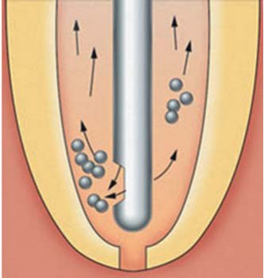
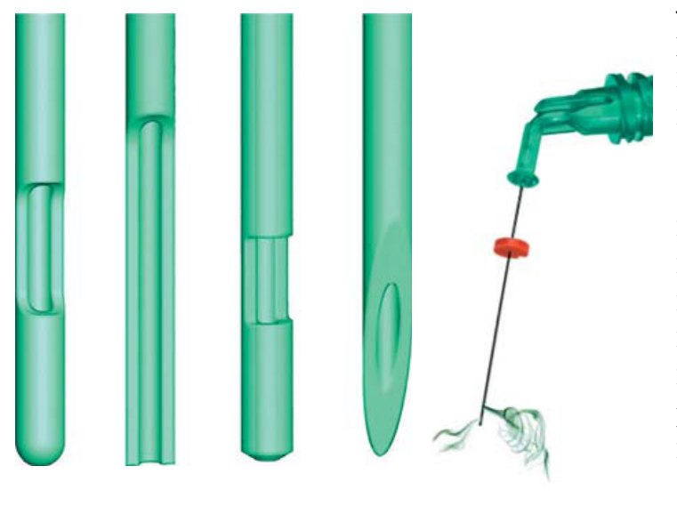
| Калібр | Розмір (мм) | Зовнішній діаметр (мм) | Внутрішній діаметр (мм) | |
|---|---|---|---|---|
| Мінім. | Макс. | Мінім. | ||
| 21 | 0.8 | 0.800 | 0.830 | 0.490 |
| 23 | 0.6 | 0.600 | 0.673 | 0.317 |
| 25 | 0.5 | 0.500 | 0.530 | 0.232 |
| 27 | 0.4 | 0.400 | 0.420 | 0.184 |
| 30 | 0.3 | 0.298 | 0.320 | 0.133 |
| 31 | 0.28 | 0.277 | 0.282 | 0.128 |
Мануально-динамічна іригація
Для максимальної ефективності іригант повинен перебувати у безпосередньому контакті зі стінками каналу. Проте часто складно доставити іригаційний розчин в апікальну зону каналу внаслідок т.з. ефекту повітряного корка.41 Дослідження показують, що зворотно-поступальні рухи конусної гутаперчі (мануально-динамічна іригація) в межах інструментально обробленого каналу мають гідродинамічний ефект і значно поліпшують переміщення і заміну іриганту.42 Ефективність цієї методики визначається такими чинниками:43
- зворотно-поступальні рухи конусної гутаперчі створюють високий внутрішньоканальний тиск при введенні штифта в канал, що має наслідком ефективнішу доставку іриганту до «незайманих» поверхонь каналу;
- частота зворотно-поступальних рухів гутаперчевого штифта (3,3 Гц, 100 циклів за 30 сек) вища, ніж частота роботи апарату РінзЕндо (RinsEndo) (1,6 Гц);
- зворотно-поступальні рухи гутаперчевого штифта заміщують частину розчину, що прореагувала, на активні молекули гіпохлориту натрію.44
Попри те, що гідродинамічні сили дозволяють активно заміщувати розчин в апікальній зоні, загальний об'єм свіжого іриганту в зоні верхівки незначний.45
Машинна техніка активації
Деякі системи для іригації, які є на стоматологічному ринку, не лише забезпечують доставку розчину в кореневий канал, але одночасно посилюють його активність — за рахунок фізичних ефектів.
Вібрінж (Vibringe)
Вібрінж — це звукова іригаційна система, що комбінує електронні коливальні рухи (9000 циклів/хв) з мануально контрольованою іригацією кореневого каналу (мал. 9). Вібрінж використовує традиційний тип введення розчину (шприц/голка), проте з додатковими звуковими коливаннями.
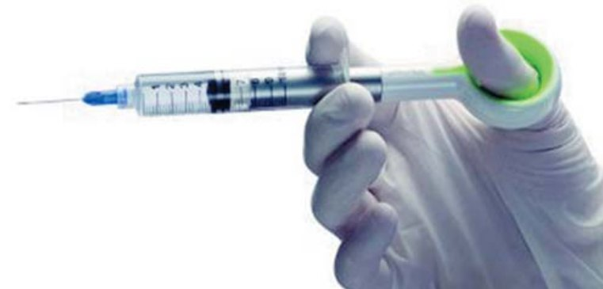
РінзЕндо (RinsEndo)
Ця система ґрунтується на механізмі подання іриганту під тиском з одночасною аспірацією близько 100 циклів за хвилину58 (мал. 10). Дослідження вказують на ризик екструзії іриганту порівняно з мануальною технікою, системами ЕндоАктиватор і ЕндоВак.57
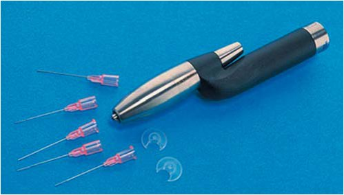
ЕндоВак (EndoVac)
На відміну від звичайного введення іриганту за допомогою шприца, ця система ґрунтується на застосуванні негативного тиску, коли іригант, введений у кореневий канал, аспірується за допомогою тонкої голки особливого дизайну (мал. 11).
У системі ЕндоВак макро- або мікроканюля з'єднується за допомогою трубочки зі шприцом для іригації і всмоктувачем. Пластикова макроканюля має розмір отвору55 з конусністю .02 і приєднана до титанової ручки для первинного промивання корональної частини кореневого каналу. Мікроканюля з неіржавіючої сталі (розмір 32) має чотири рівні отвори, розташовані близько до кінчика. Вона з'єднується з титановим наконечником для іригації апікальної частини каналу із введенням на робочу довжину. Мікроканюля використовується в каналах, розширених до 35 розміру і більше. У процесі роботи іригаційний розчин доставляється в порожнину зуба з одночасним видаленням надлишку. Канюля в каналі проводить аспірацію свіжого іриганту з порожнини зуба, дозволяючи розчину проходити по всьому кореневому каналу.50 Порівняння різних іригаційних систем вказує на знижені ризики при застосуванні системи ЕндоВак в апікальній зоні.57 Іншими перевагами зворотного плину розчину можна вважати гарне очищення в межах 1 мм від апікального отвору і виражений антибактеріальний ефект при використанні гіпохлориту.59, 60 Такий тип іригації знижує ризик ускладнень, пов'язаних з екструзією розчину в періапікальні тканини. Проте ошурки в апікальній зоні можуть блокувати отвори мікроканюлі, що ускладнює аспірацію розчину.
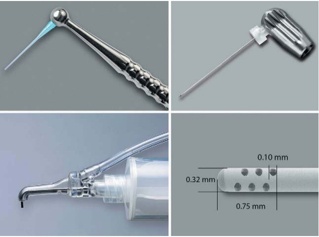
Ультразвук
Використання ультразвукової енергії для очищення кореневого каналу і полегшення дезінфекції має дуже довгу історію в ендодонтичній практиці. Дослідження вказують на краще очищення кореневого каналу в зоні анастомозів, латеральних відгалужень, перешийка та апікальної дельти при використанні іриганту в комбінації з ультразвуком у порівнянні з ручною інструментацією55 (мал. 12). Механізм дії пасивного ультразвуку пов'язаний з акустичними потоками (мікропотоками) і кавітацією,51 що забезпечує й антибактеріальний ефект.56 Кавітація та акустичні мікропотоки збільшують біохімічну активність іриганту і створюють максимальний ефект при його застосуванні52, 53 (мал. 13).
Проте для ефективної роботи ультразвуковий файл повинен здійснювати вільні рухи в розчині без контакту зі стінками кореневого каналу.54 При блокуванні U-файла у зігнутому кореневому каналі відбувається перенесення ультразвукових коливань кінчика в дентинну стінку, що може призводити до ушкодження та утворення уступів, а також ослаблення тканин зуба.
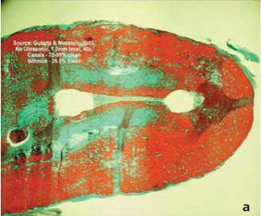
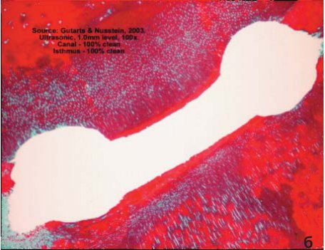
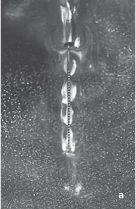
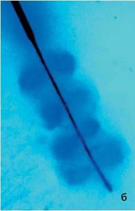
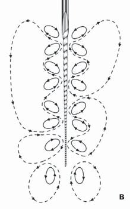
ЕндоАктиватор (EndoActivator)
Прилад ґрунтується на звукових коливаннях полімерної насадки в кореневому каналі до 10000 циклів за хвилину. Система включає три типи насадок з різною геометрією, що легко фіксуються на наконечнику (мал. 14, 15). ЕндоАктиватор не вводить свіжий розчин у канал, проте полегшує проникнення іриганту. Дослідження свідчать, що система ЕндоАктиватор поліпшує проникнення розчину і механічне очищення у порівнянні із самостійною іригацією шприцом та ендоголкою. Ця система значно знижує ризик екструзії іриганту за апекс.57
ЕндоАктиватор здатний повністю очистити канали з додатковою анатомією, латеральні відгалуження, видалити змазаний шар, а також зруйнувати біоплівку всередині викривлених кореневих каналів.61 Гідродинамічна активація посилює проникнення, циркуляцію і плинність іриганту у важкодоступних зонах системи кореневих каналів62 (мал. 16, 17). Таке очищення є запорукою якісної і довготермінової тривимірної обтурації. Додаткове застосування проміжної активації підвищує шанс очищення піднутрень і латеральних відгалужень кореневого каналу по всій робочій довжині (мал. 18). Звукова дія має механізм, схожий з ультразвуком, незважаючи на різну частоту коливань файла.
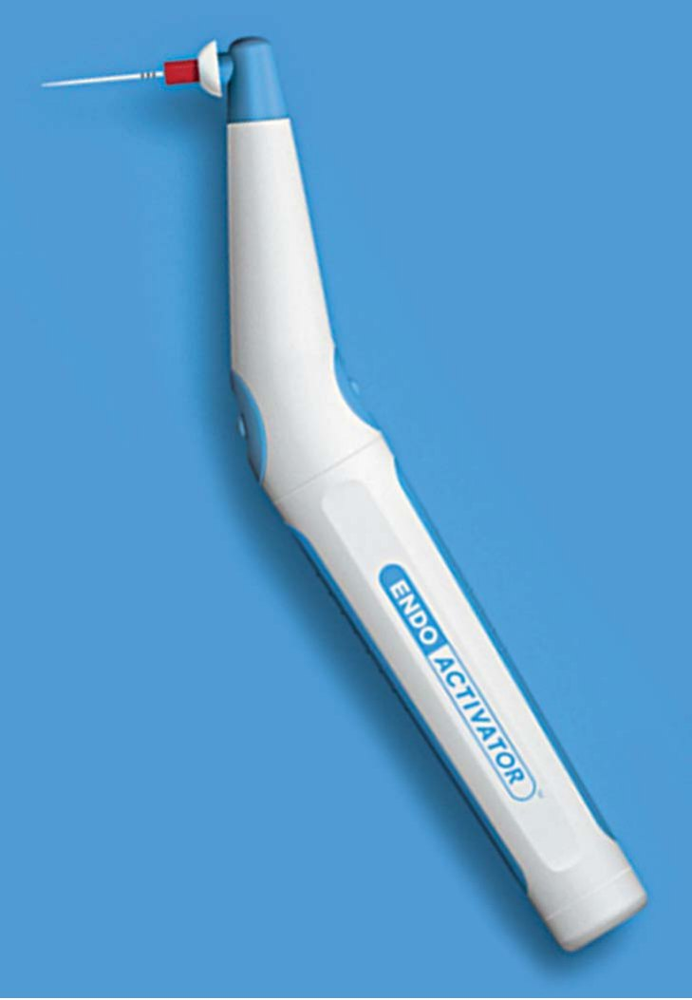
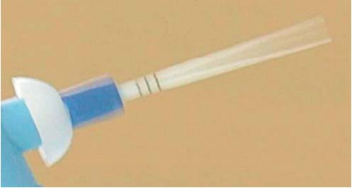
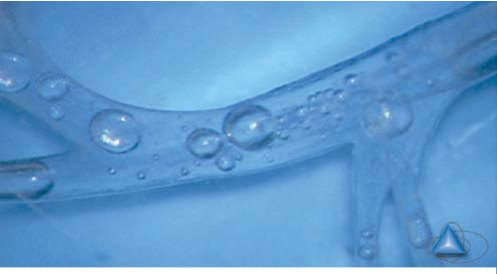
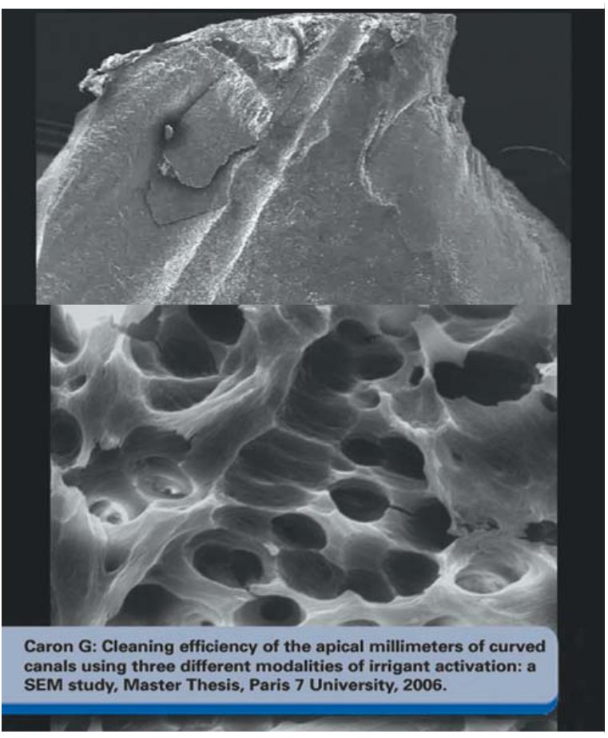
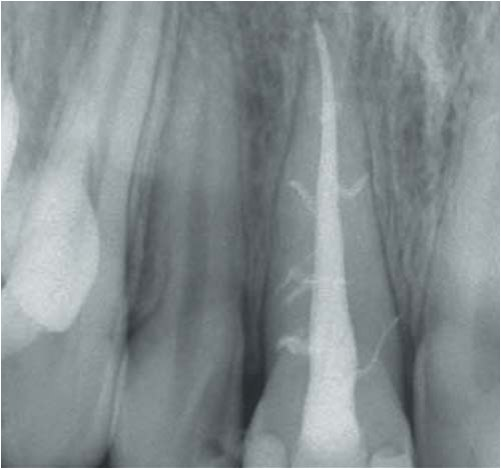
Повітряний корок
Потрапляння повітря в закриті мікроканальці при введенні іригаційного розчину — загальновідомий фізичний феномен.46 Здатність рідини проникати в ці канальці залежить від кута контакту рідини, а також глибини і розмірів каналу.40 За різних умов ці мікроканальці все ж можуть бути промиті через певний час (години, дні).41 Ефект потрапляння повітря і час, за який може бути промито увесь канал, має клінічне значення при введенні іриганту шприцом на рівні корональної і середньої частини кореневого каналу. З огляду на те, що іригація триває впродовж хвилин, а не годин і днів, потрапляння повітря в апікальну частину каналу може ускладнити контакт іриганту і дезінфекцію в цій зоні.
Деякі автори49 встановили, що розчин гіпохлориту натрію не проникав глибше, ніж за 3 мм до робочої довжини, навіть при розширенні апікальної частини до розміру 30 (мал. 19). Найчастіше це є наслідком того, що всередині кореневого каналу гіпохлорит натрію реагує з органічною тканиною з утворенням в апікальній зоні бульбашок газу, при об'єднанні яких формується повітряний корок.41 Оскільки повітряний корок не може бути видалений при механічній обробці за короткий час, він блокує подальше потрапляння іригаційного розчину в апікальну частину. Більше того, акустичні мікропотоки і ефект кавітації виникають лише в межах рідини. Тому при потраплянні ультразвукового файла в зону повітряного корка акустичні мікропотоки і кавітація стають фізично неможливими.41
Найпростіший метод видалення повітряного корка — введення на робочу довжину гутаперчевого штифта, що відповідає розміру і конусності останнього робочого файла.43 За цієї техніки штифт заповнює практично увесь просвіт каналу, переміщуючи повітряний корок і доставляючи іригант на робочу довжину (мал. 20). На жаль, ця методика не дає 100% гарантії видалення повітря з апікальної частини.
Більш надійним і передбачуваним, на наш погляд, є застосування звукової системи ЕндоАктиватор. Тонкі полімерні насадки і звукові коливання роблять активацію розчину за типом «цунамі». Це забезпечує швидке переміщення і видалення повітряного корка, дозволяючи іриганту легко досягати апікальної зони. Така техніка дає можливість якісно обтурувати систему кореневих каналів.
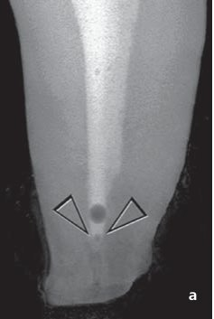
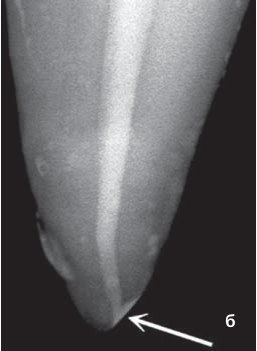
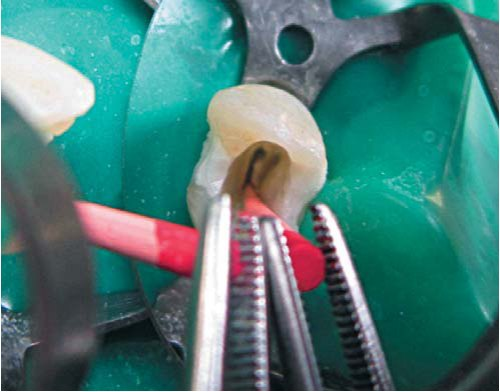
Висновок
Ефективна доставка іриганту в кореневий канал і його активація — найважливіші чинники, що впливають на якісну тривимірну обтурацію і успіх ендодонтичного лікування в цілому. Нові методики і пристрої для активації іригаційних розчинів покликані поліпшити доставку іриганту, посилити розчинення тканин і, залежно від плану лікування, видаляти змазаний шар. Ці системи поліпшують очищення кореневого каналу в порівнянні зі стандартною технікою іригації кореневого каналу.
Література
- Siqueira J.F.Jrю, Rocas I.N. Clinical implications and microbiology of bacterial persistence after treatment procedures. J Endod 2008;34:1291-301.
- Wong R. Conventional endodontic failure and retreatment. Dent Clin North Am 2004;48:265-89.
- Basmadjian-Charles C.L., Farge P., Bourgeois D.M., Lebrun T. Factors influencing the long-term results of endodontic treatment: a review of the literature. Int Dent J 2002; 52:81-6.
- Sjogren U., Hagglund B., Sundqvist G., Wing K. Factors affecting the long-term results of endodontic treatment. J Endod 1990;16:498-504.
- Walton R.E. Histologic evaluation of different methods of enlarging the pulp canal space. J Endod 1976;2:304-11.
- Shuping G.B., Østravik D., Sigurdsson A., Trope M. Reduction of intracanal bacteria using nickel-titanium rotary instrumentation and various medications. J Endod 2000;26:751-5.
- Fariniuk L.F., Baratto-Filho F., da Cruz-Filho A.M., de Sousa-Neto M.D. Histologic analysis of the cleaning capacity of mechanical endodontic instruments activated by the ENDOflash system. J Endod 2003;29:651-3.
- Hess W. The anatomy of the root-canals of the teeth of the permanent dentition: part I. New York: William Wood & Co; 1925. 1-47.
- Vertucci F.J. Root canal anatomy of the human permanent teeth. Oral Surg Oral Med Oral Pathol 1984;58:589-99.
- Peters O.A. Current challenges and concepts in the preparation of root canal systems: a review. J Endod 2004;30:559-67.
- Wu M.K., Wesselink P.R. A primary observation on the preparation and obturation of oval canals. IntEndod J 2001;34:137-41.
- Wollard R.R., Brough S.O., Maggio J., Seltzer S. Scanning electron microscopic examination of root canal filling materials. J Endod 1976;2:98-110.
- Wu M.K., van der Sluis L.W., Wesselink P.R. A preliminary study of the percentage of gutta-percha-filled area in the apical canal filled with vertically compacted warm gutta-percha. IntEndod J 2002;35:527-35.
- Naidorf I.J. Clinical microbiology in endodontics. Dent Clin North Am 1974;18: 329-44.
- Gulabivala K., Patel B., Evans G., Ng Y.L. Effects of mechanical and chemical procedures on root canal surfaces. Endodontic Topics 2005;10:103-22.
- Zehnder M. Root canal irrigants. J Endod 2006;32:389-98.
- Christensen C.E., McNeal S.F., Eleazer P. Effect of lowering the pH of sodium hypochlorite on dissolving tissue in vitro. J Endod 2008;34:449-52.
- Abou-Rass M., Oglesby S.W. The effects of temperature, concentration, and tissue type on the solvent ability of sodium hypochlorite. J Endod 1981;7:376-7.
- Cunningham W.T., Joseph S.W. Effect of temperature on the bactericidal action of sodium hypochlorite endodontic irrigant. Oral Surg Oral Med Oral Pathol 1980; 50:569-71.
- Lui J.N., Kuah H.G., Chen N.N. Effect of EDTA with and without surfactants or ultrasonics on removal of smear layer. J Endod 2007;33:472-5.
- Ringel A.M., Patterson S.S., Newton C.W., Miller C.H., Mulhern J.M. In vivo evaluation of chlorhexidinegluconate solution and sodium hypochlorite solution as root canal irrigants. J Endod 1982;8:200-4.
- Al-Hadlaq S.M., Al-Turaiki S.A., Al-Sulami U., Saad A.Y. Efficacy of a new brush-covered irrigation needle in removing root canal debris: a scanning electron microscopic study. J Endod 2006;32:1181-4.
- Rossi-Fedele G., De Figueiredo J.A. Use of a bottle warmer to increase 4% sodium hypochlorite tissue dissolution ability on bovine pulp. AustEndod J 2008;34: 39-42.
- Kamburis J.J., Barker T.H., Barfield R.D. et al. Removal of organic debris from bovine dentin shavings. J Endod 2003;29:559-61.
- Frais S., Ng Y.L., Gulabivala K. Some factors affecting the concentration of available chlorine in commercial sources of sodium hypochlorite. IntEndod J 2001;34: 206-15.
- Moorer W.R., Wesselink P.R. Factors promoting the tissue dissolving capability of sodium hypochlorite. IntEndod J 1982;15:187-96.
- Estrela C., Estrela C.R., Barbin E.L., et al. Mechanism of action of sodium hypochlorite. Braz Dent J 2002;13:113-7.
- van der Sluis L.W., Gambarini G., Wu M.K., Wesselink P.R. The influence of volume, type of irrigant and flushing method on removing artificially placed dentine debris from the apical root canal during passive ultrasonic irrigation. IntEndod J 2006;39: 472-6.
- Grande N.M., Plotino G., Falanga A., Pomponi M., Somma F. Interaction between EDTA and sodium hypochlorite: a nuclear magnetic resonance analysis. J Endod 2006;32: 460-4.
- Hauser V., Braun A., Frentzen M. Penetration depth of a dye marker into dentine using a novel hydrodynamic system (RinsEndo). IntEndod J 2007;40:644-52.
- Nair P.N., Henry S., Cano V., Vera J. Microbial status of apical root canal system of human mandibular first molars with primary apical periodontitis after «one-visit»' endodontic treatment. Oral Surg Oral Med Oral Pathol Oral RadiolEndod 2005; 99:231-52.
- Wu M.K., Dummer P.M., Wesselink P.R. Consequences of and strategies to deal with residual post-treatment root canal infection. IntEndod J 2006;39:343-56.
- Ram Z. Effectiveness of root canal irrigation. Oral Surg Oral Med Oral Pathol 1977; 44:306-12.
- Chow T.W. Mechanical effectiveness of root canal irrigation. J Endod 1983;9:475-9.
- Langeland K., Liao K., Pascon E.A. Work-saving devices in endodontics: efficacy of sonic and ultrasonic techniques. J Endod 1985;11:499-510.
- Goldman M., Kronman J.H., Goldman L.B., Clausen H., Grady J. New method of irrigation during endodontic treatment. J Endod 1976;2:257-60.
- Falk K.W., Sedgley C.M. The influence of preparation size on the mechanical efficacy of root canal irrigation in vitro. J Endod 2005;31:742-5.
- Lertchirakarn V., Palamara J.E., Messer H.H. Patterns of vertical root fracture: factors affecting stress distribution in the root canal. J Endod 2003;29:523-8.
- Sedgley C.M., Nagel A.C., Hall D., Applegate B. Influence of irrigant needle depth in removing bioluminescent bacteria inoculated into instrumented root canals using real-time imaging in vitro. IntEndod J 2005;38:97-104.
- Sedgley C., Applegate B., Nagel A., Hall D. Real-time imaging and quantification of bioluminescent bacteria in root canals in vitro. J Endod 2004;30:893-8.
- Pesse A.V., Warrier G.R., Dhir V.K. An experimental study of the gas entrapment process in closed-end microchannels. Int J Heat Mass Transfer 2005;48:5150-65.
- Machtou P. Irrigation investigation in endodontics. Paris VII University, Paris, France: Mastersthesis; 1980.
- McGill S., Gulabivala K., Mordan N., Ng Y.L. The efficacy of dynamic irrigation using a commercially available system (RinsEndo) determined by removal of a collagen 'bio-molecular film' from an ex vivo model. IntEndod J 2008;41: 602-8.
- Wiggins S., Ottino J.M. Foundations of chaotic mixing. Philos Transact A Math PhysEngSci 2004;362:937-70.
- Huang T.Y., Gulabivala K., Ng Y- L. A bio-molecular film ex-vivo model to evaluate the influence of canal dimensions and irrigation variables on the efficacy of irrigation. IntEndod J 2008;41:60-71.
- Bankoff S.B. Entrapment of gas in the spreading of a liquid over a rough surface. AICHE J 1958;4:24-6.
- Dovgyallo G.I., Migun N.P., Prokhorenko P.P. The complete filling of dead-end conical capillaries with liquid. J EngPhy 1989;56:395-7.
- Migun N.P., Shnip A.I. Model of film flow in a dead-end conic capillary. J End PhysThermophys 2002;75:1422-8.
- Senia E.S., Marshall F.J., Rosen S. The solvent action of sodium hypochlorite on pulp tissue of extracted teeth. Oral Surg Oral Med Oral Pathol 1971;31:96-103.
- Nielsen B.A., Baumgartner C.J. Comparison of the EndoVac system to needle irrigation of root canals. J Endod 2007;33:611-5.
- Plotino G., Pameijer C.H., Grande N.M. et al. Ultrasonics in endodontics: a review of the literature. J Endod 2007;33:81-95.
- Martin H., Cunningham W. Endosonics-the ultrasonic synergistic system of endodontics. Endod Dent Traumatol 1985;1:201-6.
- Roy R.A., Ahmad M., Crum L.A. Physical mechanisms governing the hydrodynamic response of an oscillating ultrasonic file. IntEndod J 1994;27:197-207.
- Lumley P.J., Walmsley A.D., Walton R.E. et al. Effect of pre-curving endosonic files on the amount of debris and smear layer remaining in curved root canals. J Endod 1992;18:616-9.
- Goodman A., Reader A., Beck M. et al. An in vitro comparison of the efficacy of the step-back technique versus a step-back ultrasonic technique in human mandibular molars. J Endod 1985;11:249-56.
- Spoleti P., Siragusa M., Spoleti M.J. Bacteriological evaluation of passive ultrasonic activation. J Endod 2002;29:12-4.
- Desai P., Himel V. Comparative safety of various intracanal irrigation systems. J Endod 2009;35:545-9.
- Hauser V., Braun A., Frentzen M. Penetration depth of a dye marker into dentine using a novel hydrodynamic system (RinsEndo). IntEndod J 2007;40:644-52.
- Hockett J.L., Dommisch J.K., Johnson J.D. et al. Antimicrobial efficacy of two irrigation techniques in tapered and nontapered canal preparations: an in vitro study. J Endod 2008;34:1374-7.
- Nielsen B.A., Craig Baumgartner J. Comparison of the EndoVac system to needle irrigation of root canals. J Endod 2007;33:611-5.
- Caron G. Cleaning Efficiency of the Apical Millimeters of Curved Canals Using Three Different Modalities of Irrigant Activation: An SEM Study [Mastersthesis]. Paris VII; Paris, France; 2006, publication pending.
- Guerisoli D.M., Marchesan M.A., Walmsley A.D. et al. Evaluation of smear layer removal by EDTAC and sodium hypochlorite with ultrasonic agitation. IntEndod J. 2002;35:418-421.